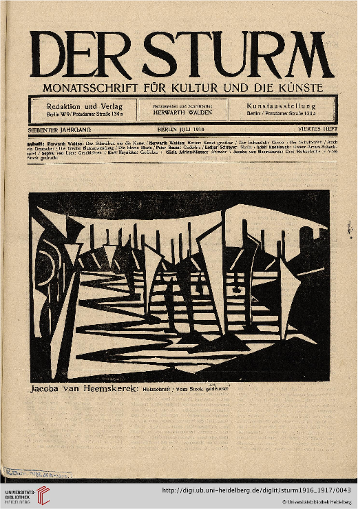
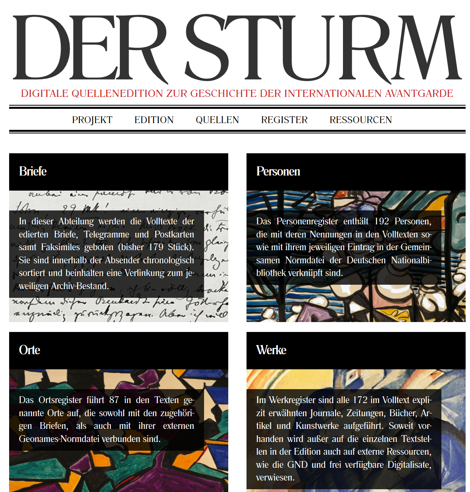
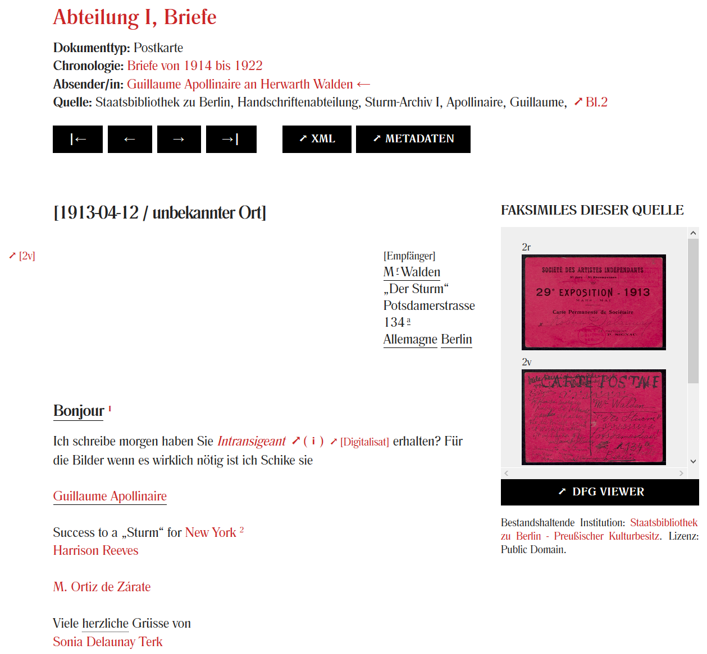
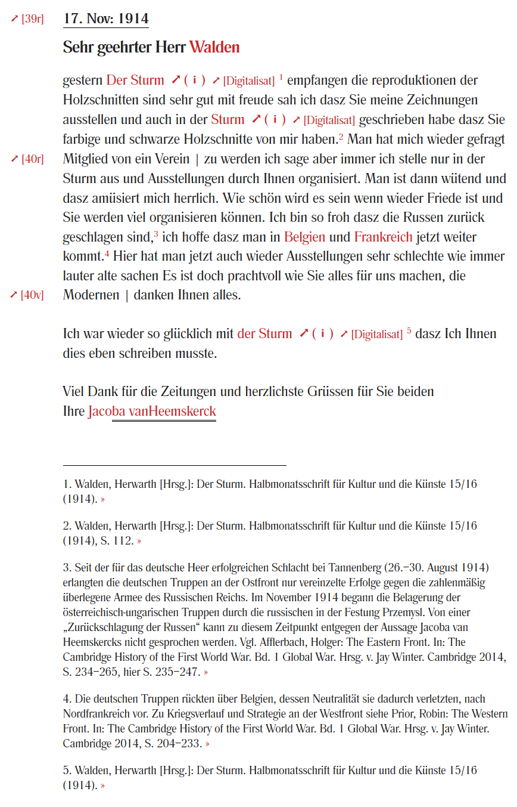
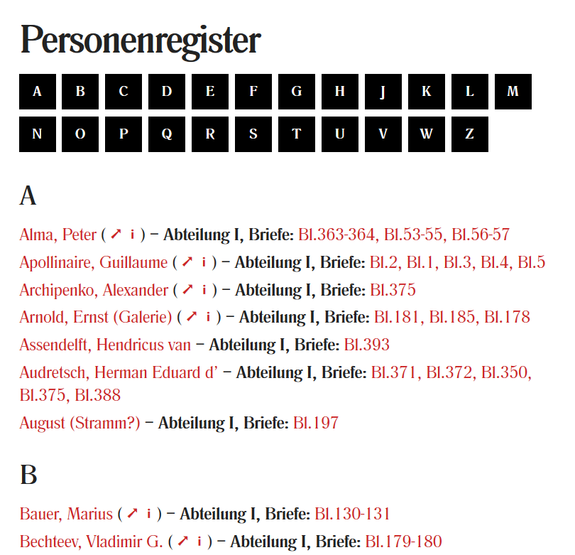
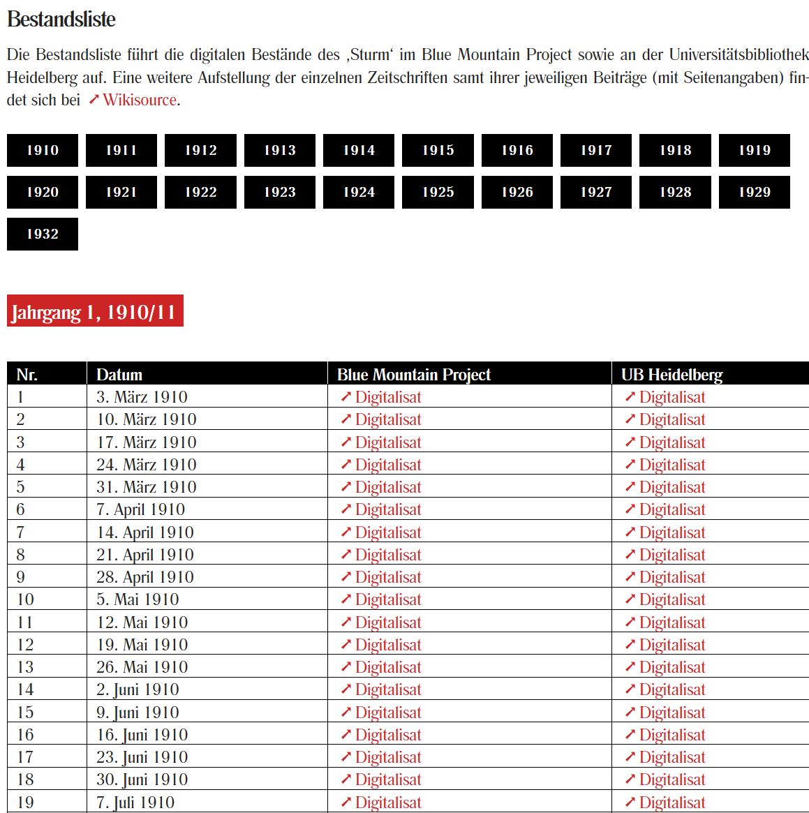
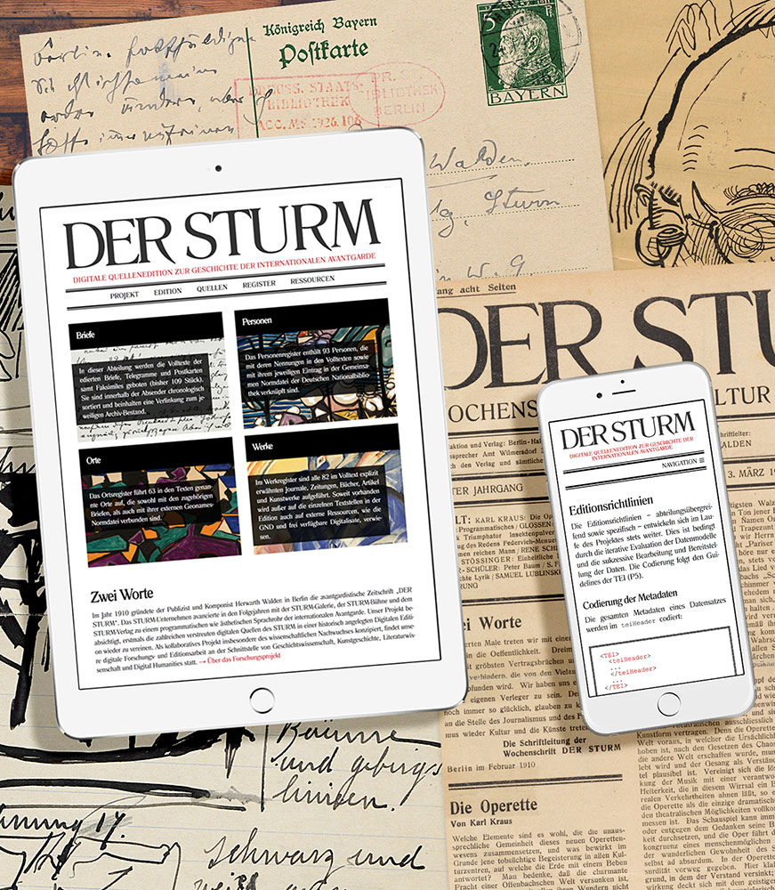
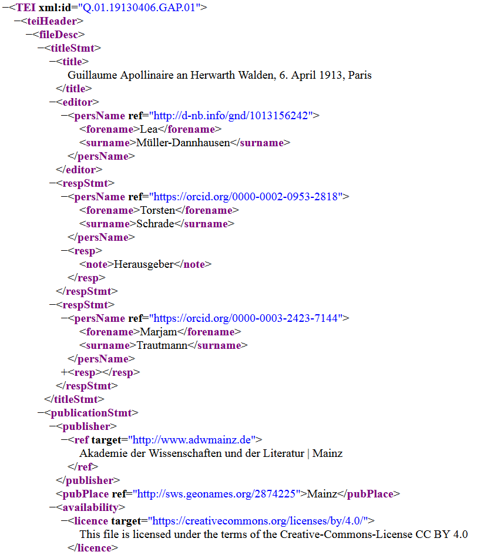

DER STURM
Table of Contents
Abstract
This paper reviews the digital edition Der Sturm – Digitale Quellenedition zur Geschichte der internationalen Avantgarde, which aims to bring together all existing digital sources on the STURM company, to make them accessible and to link them with each other. Initiated by Herwarth Walden by founding the STURM magazine for contemporary art, the STURM company provided many different platforms (e.g., gallery, publishing, theatre) for the art scene in Germany at the beginning of the 20th century and had also a big impact on the international avant-garde. The digital edition currently offers facsimiles, transcriptions, and commentaries on a part of the letters, the encoding of the sources and texts is done in TEI-XML and can be downloaded or accessed via an API. Inventory lists exist for the other documents which link to the source of the digital image. All semantic and structural entities of STURM sources are permanently referenced using persistent identifiers.

Herwarth Walden ist eine der Schlüsselfiguren der Kunst-Moderne in Deutschland. Zunächst hatte Walden 1903 den Verein für Kunst gegründet, dem zahlreiche bekannte Künstlerinnen und Künstler der Zeit angehörten (u. a. Thomas und Heinrich Mann, Else Lasker-Schüler, Rainer Maria Rilke, Alfred Döblin oder Gottfried Benn). Dieses Netzwerk baute er – auch zusammen mit seiner späteren Ehefrau Nell Walden – kontinuierlich auf. Es bildete die Basis für alle folgenden Entwicklungen. Die Zeitschrift Der Sturm war über 20 Jahre Sprachrohr europäischer avantgardistischer Strömungen in Literatur, Bildender Kunst, Theater, Architektur und Musik und hatte weitreichenden Einfluss auf die internationale Avantgarde.2
Gerade die vielfältigen und gattungsübergreifenden Aktivitäten in unterschiedlichen Bereichen der Künste machen Herwarth Walden und das STURM-Unternehmen für viele geisteswissenschaftliche Disziplinen und auch für interdisziplinäre Fragestellungen interessant. Die Quellen, welche Briefe, Zeitschriften, Ausstellungskataloge, Theaterjahrbücher, verschiedene Schriften und andere Materialien wie Plakate oder Fotografien umfassen,3 sind von hoher Relevanz für die kunsthistorische Forschung, aber auch für die Geschichtswissenschaft, die Literaturwissenschaft, Theaterwissenschaft und Musikwissenschaft. Zahlreiche Anknüpfungspunkte gibt es aber auch für die Kunstmarktforschung. Darüber hinaus sind die Quellen natürlich auch disziplinübergreifend für die Digital Humanities von großem Interesse.

Ausgehend von der Ausstellung STURM-Frauen, welche 2015 in der Schirn Kunsthalle in Frankfurt gezeigt wurde und erstmals den weiblichen Beitrag zur Entwicklung der Avantgarde in den Blick nahm,5 wurde die digitale Edition als kollaboratives Digital-Humanities-Projekt an der Akademie der Wissenschaften und der Literatur Mainz insbesondere zusammen mit dem wissenschaftlichen Nachwuchs konzipiert und sieht sich in erster Linie als Projekt im Bereich der Geschichte. Es ist an der Akademieprofessur für Digital Humanities angesiedelt, wurde von Marjam Trautmann und Torsten Schrade erarbeitet und wird weiterhin von diesen herausgegeben.6 Eine erste Grundlage für die Erarbeitung der digitalen Edition lieferte eine Masterarbeit von Marjam Trautmann (2018). Bislang sind alle Arbeiten an dem Projekt ohne eine externe Förderung durchgeführt worden, was hinsichtlich der Elaboriertheit des Projekts besonders betont werden muss. Dies ist sicherlich vor allem wegen der institutionellen Anbindung möglich. Alle Inhalte sind zudem frei zugänglich.
Die Quellenedition umfasst sechs Abteilungen:
- Abteilung I – STURM-Briefe
- Abteilung II – STURM-Zeitschrift
- Abteilung III – STURM-Kataloge (Ausstellungen)
- Abteilung IV – STURM-Bühne (Theaterjahrbücher)
- Abteilung V – STURM-Schriften (Bücher des Verlages)
- Abteilung VI – STURM-Materialien (sonstiges Quell-Material)
Alle sechs Abteilungen befinden sich noch im Aufbau: In der Abteilung I wurde bereits mit der Erschließung der Quellen begonnen, wohingegen die Abteilungen II bis VI zunächst die aus unterschiedlichen Quellen zur Verfügung stehenden Digitalisate in Bestandslisten versammeln. Die Digitalisate der STURM-Zeitschriften (Abteilung II) werden zum Beispiel von der Universitätsbibliothek Heidelberg, die Digitalisate der STURM-Kataloge (Abteilung III) vom Zentralinstitut für Kunstgeschichte in München und die Digitalisate der STURM-Bühne (Abteilung IV) vom Blue Mountain Project zur Verfügung gestellt. Abteilung V und VI stellen jeweils Bestandslisten bereit, die im STURM-Verlag erschienenen Schriften bzw. andere Materialien verzeichnen und diese ggf. mit dem Link zu einem Digitalisat versehen.7 Der nächste Schritt für die Abteilungen II bis VI soll sein, Volltexte bereitzustellen und diese im XML-Format nach den TEI-Guidelines zu erfassen.8

Die Briefe von Franz Marc und Jacoba von Heemskerck wurden innerhalb der Masterarbeit von Marjam Trautmann erstmalig digital ediert: Die Briefe von Jacoba van Heemskerck wurden zwar bereits 2006 von Arend Hendrik Husseen publiziert und ediert (Huussen 2006), jedoch kritisiert Trautmann Husseens Edition aufgrund der Veränderungen in der Transkription im Vergleich zum Original teilweise stark,9 weshalb sie diese Briefe innerhalb der Masterarbeit nochmalig erschließt. Weitere edierte Briefe der Abteilung sind anschließend hinzugekommen, wie sich aus den Zitierhinweisen mit Publikationsdaten entnehmen lässt. Auch werden neue Versionen dokumentiert. Das Projekt verfolgt einen ‚work in progress‘-Ansatz, bei dem die Briefe vom Projektteam digital erschlossen und zeitnah veröffentlicht werden.10
Bei der Transkription der Briefe werden Syntax, Interpunktion und Orthographie vom Original übernommen, wobei Silbentrennungen aufgelöst werden. Unterstreichungen und Hochstellungen werden abgebildet, Durchstreichungen nur dann, wenn sie als inhaltlich relevant erachtet werden und nicht nur zur Tilgung orthographischer Fehler dienen. Die Briefe werden nicht topographisch nachgebildet, Briefmarken, Poststempel, Wasserzeichen und Vordrucke und auch Postkartenmotive in der Regel nicht erfasst. Handschriftliche Beilagen der Briefe werden in die Transkription aufgenommen, beigelegte Zeichnungen und Zeitungsausschnitte werden in der Regel nicht transkribiert (außer ggf. handschriftliche Kommentare oder Unterstreichungen), aber als digitales Faksimile bereitgestellt.11 Die Dokumentation des Projekts ist nicht nur im Bereich der Textbehandlung sehr gut und ausführlich, sondern auf allen Ebenen, z. B. auch bei der Darstellung systematischer und technischer Aspekte. Dadurch wird die Erarbeitung der digitalen Edition sehr transparent und nachvollziehbar, was an dieser Stelle besonders hervorgehoben werden muss.


Die Register sollen abteilungsübergreifend erstellt werden, aufgrund des aktuellen Bearbeitungsstands sind die jeweiligen Quellenverweise bislang nur der Abteilung I Briefe zugeordnet und mit den entsprechenden Datensätzen verlinkt. Die einzelnen Registerlemmata führen zu einem Stammdatenblatt, auf dem die jeweiligen Registerinformationen (Normdatenverweis, Auftreten in den Quellen) nochmals separat aufgeführt werden. Perspektivisch soll dieses mit weiteren Informationen, beispielsweise aus der GND und Wikipedia, automatisiert ergänzt werden. In den Briefen selbst sind die Entitäten mit ihrem jeweiligen Register-Stammdatenblatt verknüpft. Ferner ist eine Erweiterung der Register durch die Erfassung von Ereignissen geplant (bspw. STURM-Ausstellungen).14
Neben den zentralen Registerzugängen Person, Ort und Werk ist innerhalb der Abteilungen auch ein chronologischer Einstieg möglich. Hier befindet sich jeweils eine nach Jahren sortierte Liste der Quellen. Bei den Briefen kann man zusätzlich auch über die Künstler*innen auf die Inhalte zugreifen. Laut Projektwebseite werden weiterhin mittelfristig drei zusätzliche Quellenzugänge angestrebt: Ereignisse, Körperschaften und Sachbegriffe.15

Im Sinne der Nachhaltigkeit erfolgt die Codierung der Quellen und Begleittexte der digitalen Edition in TEI-XML. Sie werden darüber hinaus mit übergreifenden Metadaten (teiHeader) und Normdaten versehen. Persistente Identifikatoren und Permalinks sorgen zudem für eine dauerhafte Adressierung und Zitierbarkeit. Die Identifikatoren sind systematisch nach einem einheitlichen Schema angelegt und lassen durch ihre semantische Strukturierung auch Rückschlüsse auf die Quelle zu: TYP.ABTEILUNG.DATIERUNG.SIGLE.LAUFNUMMER[#][ABSATZ/BILD].[KOLUMNE].[SEITE/FOLIO]. Für einen Brief von Franz Marc ergibt sich daher zum Beispiel: https://sturm-edition.de/id/Q.01.19140115.FMA.01. Für einen STURM-Katalog vom 20. September 1913 lässt sich folgender Identifikator ermitteln: Q.03.19130920.STK.01. Der Aufruf einer URI führt immer zur aktuellen Version der Entität, wobei auch alle vorangegangenen Versionen flexibel aufrufbar sind, z. B. https://sturm-edition.de/id/Q.01.19140115.FMA.01/1. Dies ist ein weiterer vorbildlicher Schritt zu einer transparenten und nachvollziehbaren digitalen Edition.
Die Systematisierung und Modellierung der zahlreichen unterschiedlichen und verteilten Quellentypen des STURM bildet hier den Kern der digitalen Methodik. Die Verknüpfungen und Beziehungen der Quellen untereinander werden derzeit unter Anwendung bestehender Ontologien wie dem CIDOC Conceptual Reference Model oder fachspezifischer Vokabulare wie dem Getty Art & Architecture Thesaurus (AAT) semantisch modelliert und perspektivisch als Linked Open Data verfügbar gemacht. Zunächst werden die in den bereits edierten Quellen annotierten Entitäten wie Personen, Orte und Werke semantisch verknüpft, anschließend auch Entitäten wie zum Beispiel Körperschaften und Ereignisse.16
Für die Edition der Quellen in XML wurde eine Webanwendung für die native XML-Datenbank eXist entwickelt. Die Editionsarbeiten werden mit oXygen durchgeführt, die Online-Publikation der Quellen erfolgt aus der Anwendung heraus, indem alle Bestandteile als XML vorgeneriert und dann als statisches HTML ausgeliefert werden. Diese Softwarekomposition soll die Performance steigern und die Nachhaltigkeit verbessern, indem alle Komponenten und auch die Präsentationsschicht und die generierten Formate systemneutral verfügbar gemacht werden. Im Bereich der Textverarbeitung kommt TUSTEP zum Einsatz.17 Die Editionssoftware dieses Projektes steht unter MIT-Lizenz und kann über GitHub frei heruntergeladen und weiterentwickelt werden.18


Die unterschiedlichen Zugänge zur digitalen Edition (Künstler, Jahr, Abteilung, etc.) bieten einen guten Einstieg für eine explorative oder systematische Erforschung des Materials. Wünschenswert wäre hier die Ergänzung einer Volltextsuche, um gezielt nach Wörtern recherchieren zu können, die in den Briefen auftauchen. Für die kunstgeschichtliche Forschung wäre darüber hinaus ein eigenes Register für Kunstwerke interessant, deren Lemmata (wie oben bereits angemerkt) aber systematischer erfasst werden sollten. Die verwendeten Postkarten werden nur dann als Medium beschrieben, wenn es sich um ungewöhnliche Textdokumente, wie die Verwendung einer Ausstellungsdauerkarte als Postkarte handelt (https://sturm-edition.de/quellen/briefe/gap/Q.01.19130412.GAP.01.html). Aus kunsthistorischer Perspektive wären die Motive auf den Postkarten und ggf. die Motive auf den Briefmarken von Interesse und könnten evtl. in die Erschließung aufgenommen werden. Darüber hinaus würde sich eine Visualisierung der historischen Netzwerkanalyse zu Künstlerinnen und Künstlern anbieten.20
Zusammenfassend lässt sich festhalten: Die vorliegende digitale Edition ist für die disziplinäre und interdisziplinäre geisteswissenschaftliche Forschung von hoher Relevanz, wird hier doch erstmalig der Zugriff auf die bereits vorliegenden digitalen Quellen aller STURM-Abteilungen ermöglicht, so dass ein umfassendes historisches Bild der STURM-Ära gezeichnet werden kann. Die vielfältigen Kommentare und Erschließungsinformationen in der Abteilung Briefe und die digitale Umsetzung tragen maßgeblich dazu bei. Im Sinne eines Informationsportals stehen zahlreiche weitere Meta-Informationen und Referenzen zur Verfügung, so dass man hoffentlich zukünftig auch über den Projektkontext hinaus in das STURM-Universum eintauchen können wird. Vor allem ist jeder Bereich der Edition, die Software, die Methodik etc. hervorragend und in vorbildlicher Art und Weise dokumentiert. Auch im Sinne nachhaltiger Softwareentwicklung und der Nachnutzbarkeit von Erschließungsinformationen ist das Projekt ein vorbildliches Beispiel, zumal noch einmal hervorzuheben ist, dass das Projekt bislang ohne jegliche externe Förderung ausgekommen ist. Besonders zu bemerken ist darüber hinaus die Einbindung des wissenschaftlichen Nachwuchses. Das Projekt überzeugt auf allen Ebenen und ist in der Erschließung und Dokumentation von Wissen und der Bereitstellung nachnutzbarerer Ressourcen zur Orientierung für ähnliche Projekte sehr zu empfehlen.
Bibliography
- arthistorium.net. eds. „Herwarth Walden und DER STURM“, in: Themenportal arthistoricum.net. https://www.arthistoricum.net/themen/portale/sturm/.
- Chytraeus-Auerbach, Irene und Elke Uhl. eds. 2013. Der Aufbruch in die Moderne: Herwarth Walden und die europäische Avantgarde. Berlin: Lit Verlag.
- Huussen, Arend Hendrik. ed. 2006. Brieven van Jacoba van Heemskerck en Marie Tak van Poortvliet aan Herwarth en Nell Walden en anderen. 1911–1923. Haren (Cahiers uit het noorden Bd. 10).
- Lorenz, Anne Katrin, Lea Müller-Dannhausen und Marjam Trautmann. 2019. „DER STURM. Digitale Quellenedition zur Geschichte der internationalen Avantgarde. Drei Forschungsansätze“, in: DHd 2019 Digital Humanities: multimedial & multimodal. Konferenzabstracts, Frankfurt am Main, 274-276. https://doi.org/10.5281/zenodo.2600812.
- Schirn Kunsthalle. 2015a. „STURM-Frauen. Künstlerinnen der Avantgarde in Berlin 1910–1932.“ Schirn Kunsthalle Frankfurt. Ausstellung (30.10.2015 – 07.02.2016). https://www.schirn.de/ausstellungen/2015/sturm_frauen/.
- Schirn Kunsthalle. 2015b. „STURM-Frauen. Premiere für die Künstlerinnen der Avantgarde.“ Schirn Kunsthalle Frankfurt. Ausstellung (30.10.2015 – 07.02.2016). http://schirn.de/sturmfrauen/digitorial/index.html.
- Schrade, Torsten. 2018. Annotate, Generate, Test, Deploy. Aktuelle Software-Engineering Methoden zur Steigerung der Nachhaltigkeit Digitaler Editionen. Düsseldorf. https://digicademy.github.io/2018-sustainable-editions.
- Sprengel, Peter, 1991. „Institutionalisierung der Moderne: Herwarth Walden und Der Sturm“, in: Zeitschrift für Deutsche Philologie, 247-281.
- Trautmann, Marjam und Torsten Schrade. eds. 2018. Der Sturm – Digitale Quellenedition zur Geschichte der internationalen Avantgarde, Mainz, Akademie der Wissenschaften und der Literatur. https://sturm-edition.de.
- Trautmann, Marjam. 2018. Eine Digitale Edition. Ausgewählte Briefe von Jacoba van Heemskerck und Franz Marc an Herwarth Walden (1914–1915). Mainz. http://doi.org/10.25358/openscience-2176.
Notes
- Vgl. Trautmann 2018, 25ff und vgl. auch Schirn Kunsthalle 2015a und 2015b. ↑
- Vgl. Chytraeus-Auerbach und Uhl 2013, 7-11, vgl. auch Sprengel 1991 und vgl. auch arthistoricum.net. ↑
- Vgl. Trautmann und Schrade 2018, hier: https://sturm-edition.de/quellen.html. ↑
- Vgl. Trautmann und Schrade 2018, hier insbesondere https://sturm-edition.de/projekt.html und https://sturm-edition.de/projekt/ziel.html. ↑
- Die Ausstellung fand statt vom 30. Oktober 2015 bis 7. Februar 2016. Schirn Kunsthalle 2015a. ↑
- Vgl. Trautmann und Schrade 2018, hier insbesondere https://sturm-edition.de/projekt/ziel.html. ↑
- Für weitergehende Informationen vgl. Trautmann und Schrade 2018, hier insbesondere https://sturm-edition.de/quellen.html. ↑
- Vgl. Trautmann und Schrade 2018, hier die Unterseiten zu den Abteilungen II bis VI: https://sturm-edition.de/quellen/zeitschrift.html, https://sturm-edition.de/quellen/kataloge.html, https://sturm-edition.de/quellen/buehne.html, https://sturm-edition.de/quellen/schriften.html, https://sturm-edition.de/quellen/materialien.html. ↑
- Trautmann kritisiert u. a. Huussens starke Normalisierung, Ergänzungen von Interpunktion und Wörtern und teilweise falsche Transkription. Sie liefert auch einige Beispiele für ihre Kritik. Vgl. Trautmann 2018, 10f. ↑
- Vgl. Trautmann und Schrade 2018, hier: https://sturm-edition.de/projekt/methodik.html. ↑
- Vgl. auch Trautmann und Schrade 2018, hier: https://sturm-edition.de/edition/briefe.html. ↑
- Vgl. Trautmann und Schrade 2018, hier: https://sturm-edition.de/quellen/briefe.html. ↑
- Vgl. Trautmann und Schrade 2018, hier: https://sturm-edition.de/edition.html. ↑
- Vgl. auch Trautmann und Schrade 2018, hier: https://sturm-edition.de/register.html. ↑
- Vgl. auch Trautmann und Schrade 2018, hier: https://sturm-edition.de/projekt/methodik.html. ↑
- Die Daten werden noch nicht in dieser Form zur Verfügung gestellt. Die Informationen gehen aus einem Posterbeitrag der DHd 2019 hervor. Vgl. Lorenz, Müller-Dannhausen und Trautmann 2019, 273-275. ↑
- Diese Informationen finden sich in der gut dokumentierten Softwarearchitekturbeschreibung: Trautmann und Schrade 2018, hier: https://sturm-edition.de/ressourcen/software.html. Weitere Informationen zur Steigerung der Nachhaltigkeit Digitaler Editionen am Beispiel der STURM-Edition: Schrade 2018. ↑
- Siehe https://github.com/digicademy/sturm-php-app/releases/ und https://github.com/digicademy/sturm-exist-app/releases/. ↑
- Zur Typographie vgl. Trautmann und Schrade 2018, hier: https://sturm-edition.de/ressourcen/software.html. ↑
- Eine umfassende Netzwerkanalyse ist bereits in Planung, vgl. Lorenz, Müller-Dannhausen und Trautmann 2019, 273-275. ↑
@article{sturm,
author = {Dieckmann, Lisa},
title = {DER STURM},
journal = {RIDE – A review journal for digital editions and resources},
number = {18},
year = {2023},
doi = {10.18716/ride.a.18.2},
url = {https://doi.org/10.18716/ride.a.18.2},
}TY - JOUR
AU - Dieckmann, Lisa
TI - DER STURM
T2 - RIDE – A review journal for digital editions and resources
IS - 18
PY - 2023
DA - 2023/12
DO - 10.18716/ride.a.18.2
UR - https://doi.org/10.18716/ride.a.18.2
PB - Institut für Dokumentologie und Editorik e.V.
LA - de
ER - Dieckmann, L. (2023). DER STURM. RIDE – A review journal for digital editions and resources, (18). https://doi.org/10.18716/ride.a.18.2Dieckmann, Lisa. "DER STURM." RIDE – A review journal for digital editions and resources, no. 18, 2023. https://doi.org/10.18716/ride.a.18.2.Dieckmann, Lisa. "DER STURM." RIDE – A review journal for digital editions and resources, no. 18 (2023). https://doi.org/10.18716/ride.a.18.2.